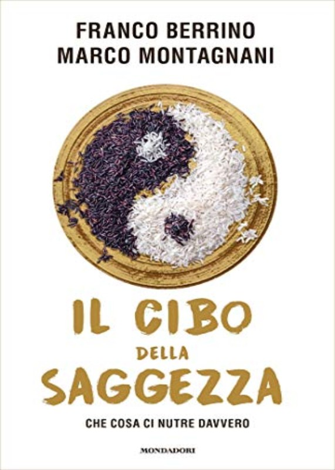

"Molti di noi sembrano non amare se stessi. Trascuriamo il corpo fisico, lo nutriamo di cibo spazzatura, silenziamo con farmaci le sue proteste... Trascuriamo il nostro corpo spirituale, che desidera essere riconosciuto e connesso con il corpo fisico, libero, in gioia."